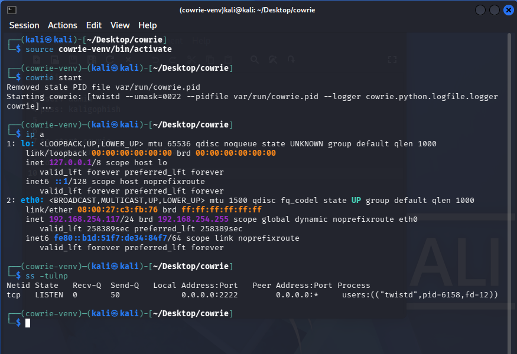
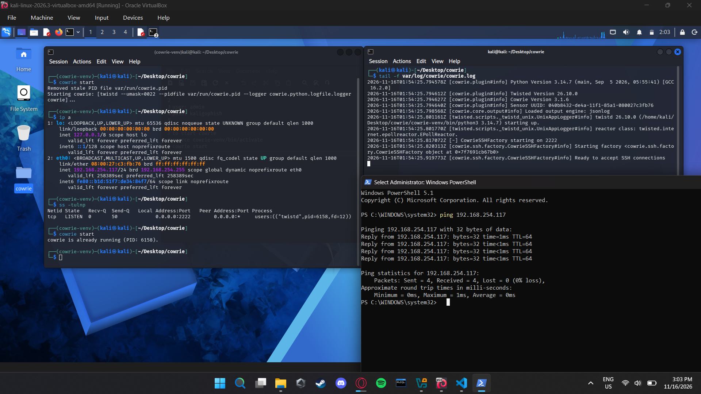
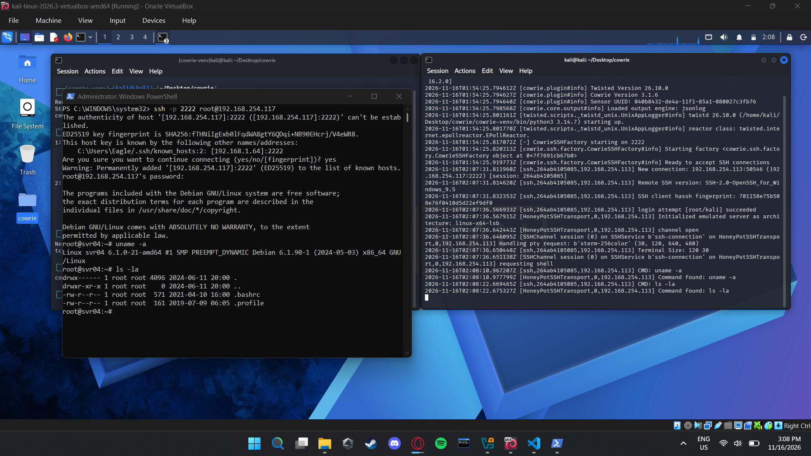

Languages
C++, JavaScript, TypeScript, HTML, and CSS.
Information Technology
Full-stack development and cybersecurity
BS Information Technology graduate of Benedicto College (2022–2026), with full-stack experience in React, Next.js, NestJS, and PostgreSQL from projects and an on-the-job internship. Currently building a security background through TESDA training in cyber threat monitoring and hands-on labs with Wireshark, honeypots, Gophish, and incident response.
Open to full-stack and cybersecurity roles · Cebu or remote
Undergraduate work, an enterprise internship, and security training. These are the languages, tools, and practices I use. The resume and project portfolio go further.
C++, JavaScript, TypeScript, HTML, and CSS.
React, Next.js, and Bootstrap for interfaces and client-side structure.
Node.js, NestJS, Next.js, and REST APIs.
MySQL, PostgreSQL, and Prisma ORM.
Wireshark, Kali Linux, honeypots, Gophish, incident response, and cyber threat monitoring. Training and lab level.
Data analytics training, with Excel for working through datasets.
Git, GitHub, Postman, and Arduino.
Problem solving, communication, critical thinking, and staying effective under pressure.
Enterprise web development during on-the-job training, working inside an existing financial system with a team.
Questnova IT Solutions
School systems, research builds, and hardware projects I led from design through implementation.
Team Leader and Lead Fullstack Developer
An undergraduate study that aims to improve the school’s manual voting process using mobile phones and school desktops.
Project Manager and Lead Developer
An Arduino-based machine that automatically sorts plastic, metal, and paper waste using sensor-based automation.
Project Leader and Lead Developer
A smart cane with GPS tracking and a beeper alert system to help visually impaired users with navigation and obstacle awareness.
Hands-on lab work and cybersecurity activities. Includes reports, screenshots, and writeups from tools like Wireshark, Gophish, honeypots, and incident response exercises.
Three incident tickets covering a phishing email, a ransomware notice, and a suspicious foreign login, each with severity, symptoms, timeline, and scope.
A full incident ticket for an Office365 credential-phishing compromise, with severity justification and immediate response actions, plus a ticket reconstructing the "I Remember It" shift-handoff failure.
Tier 1 SOC analyst workbook covering Lessons 1–15 and Labs 1–10: SPL searches, field discovery, DNS, HTTP and network analysis, correlation, detections, triage, and incident reporting.
Hands-on packet analysis: live baseline capture, TCP handshake and HTTP tracing, display-filter hunting, a network baseline dossier, and a team challenge finding anomalies mapped to MITRE ATT&CK.
An introductory demo: starting a Cowrie SSH honeypot on Kali, confirming it is reachable, then simulating an intrusion from a Windows host and watching Cowrie log the login and commands.
Degree, certifications, and current training. Status is based on the training dates; ongoing modules are marked in progress.
Education
Benedicto College, Mandaue Campus
No credentials in this view.
Awards, student leadership, and seminars from college.
Philippine Society of Information Technology Educators (PSITE), Central Visayas Region.
No seminars in this view.
For a role, a project, or a question, use the form or write directly. The form opens your email app. Nothing is stored on this page.

In the Cowrie virtual environment, cowrie start launches the honeypot under twistd. ip a shows the Kali VM at 192.168.254.117, and ss -tulnp confirms twistd is listening on TCP port 2222, Cowrie's default fake-SSH port.

From the Windows host, PowerShell pings 192.168.254.117 with 4 of 4 replies and no loss. In a second terminal, tail -f var/log/cowrie/cowrie.log shows Cowrie 3.1.6 starting its SSH factory on port 2222 and reporting it is ready to accept SSH connections.

The Windows host connects with ssh -p 2222 root@192.168.254.117 and gets what looks like a Debian server (hostname svr04). It runs uname -a and ls -la against the emulated system. Cowrie's log records the new connection from 192.168.254.113, the client version string, the successful root login attempt, and each command typed.
Click any screenshot to open it full size. This was a controlled demo on my own lab network; the "attacker" was my own machine.